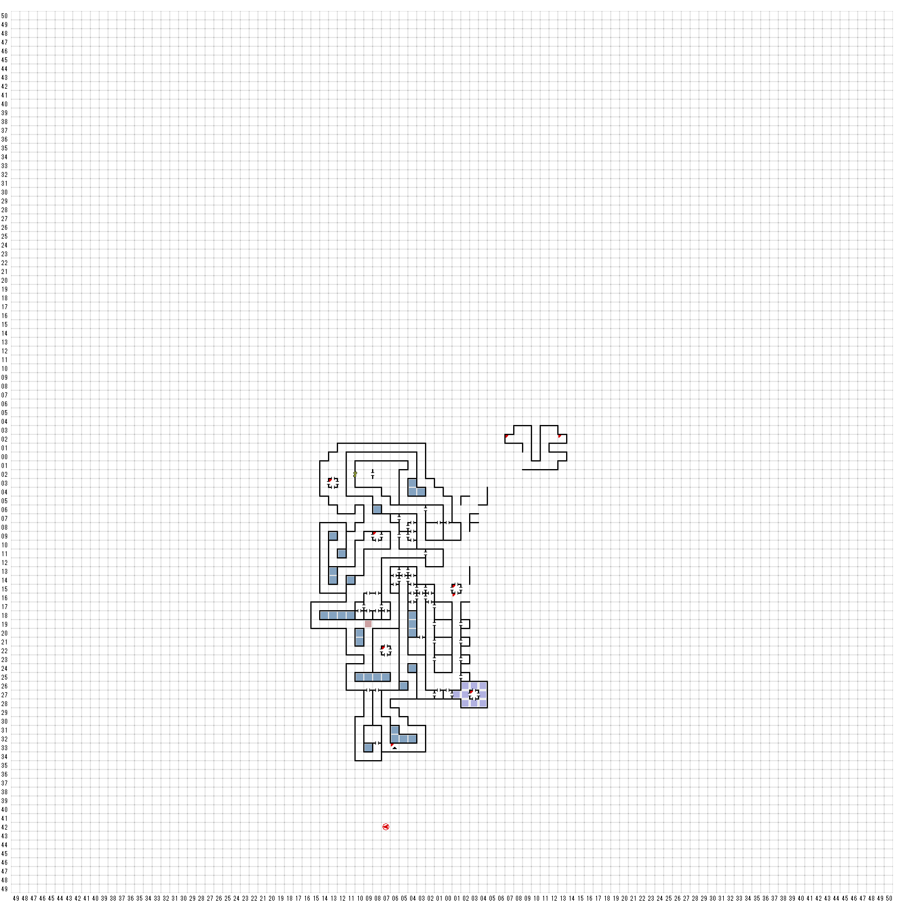

【 西：13，南：3 】
上からのロープ
ロープを使いますか（Y/N）
B5F W13 S1へ
【 西：8，南：9 】
暗い井戸は床の中に沈み込んでいった。
誰が潜る（Y/N）
A:金を失った
B：金を失った
C:癒された
D:ENCOUNT TRITON ２ ×２ AXE SHILED
E：金を失った
F:呪文ポイントが蘇った・吸い取られたのどちらか（フルではない）
G:ENCOUNT TRITON ２ 、３ 、 ３，２ SWORD SHILED
H:なにもおきなかった
I:ヒットポイントを得た
J: なにもおきなかった
K:ENCOUNT TRITON、３ SWORD
L:STRENGTHを得た 石になった ENCOUNT TRITON ３ 、 ３，２
M:死んだ
N:ENCOUNT TRITON ２、LADY NEPTUNE 1
CARD、 ANKH
【 西：7，南：23 】
ガスのわな！
石化する
【 西：6，南：34 】
上に上る階段
B5F
W6 S31へ
【 東：1，南：15 】
床の真ん中には、次のような
意味不明の印が刻まれていた。
* !--) : ---' ===
: ; ; ' , ; .--) ---
【 東：1，南：16 】
氷の滑り台！
B6F E1 S26へ
【 東：1，南：17 】
【 東：3，北：7 】
壁にはボタンがある。
捜しますか
隠されていたワイヤーに引っかかった！
シュート！
PIT!
元の位置へ
【 東：4，北：10 】
壁にはボタンがある。
捜しますか
隠されていたワイヤーに引っかかった！
シュート！
PIT
元の場所へ
【 東：5，北：8 】
B5Fのシュートから落ちてきたところ
【 東：6，北：6 】
壁にはボタンがある。
捜しますか。
【 東：7，北：9 】
壁にはボタンがある。
捜しますか
隠されていたワイヤーに引っかかった！
シュート！
PIT!
元の場所へ